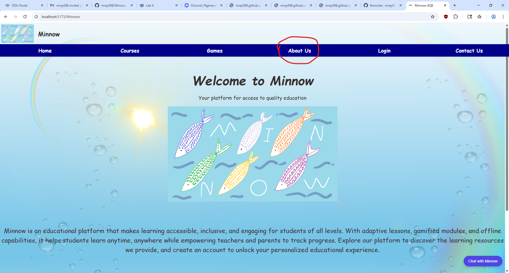
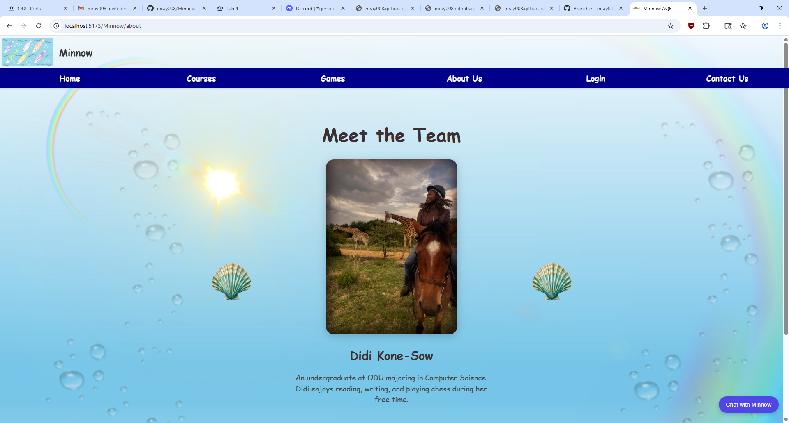
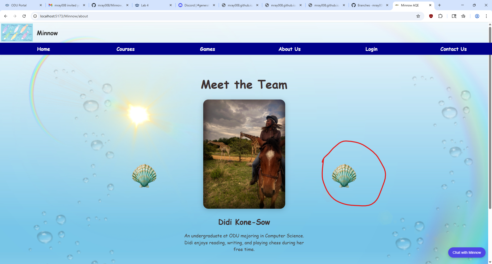
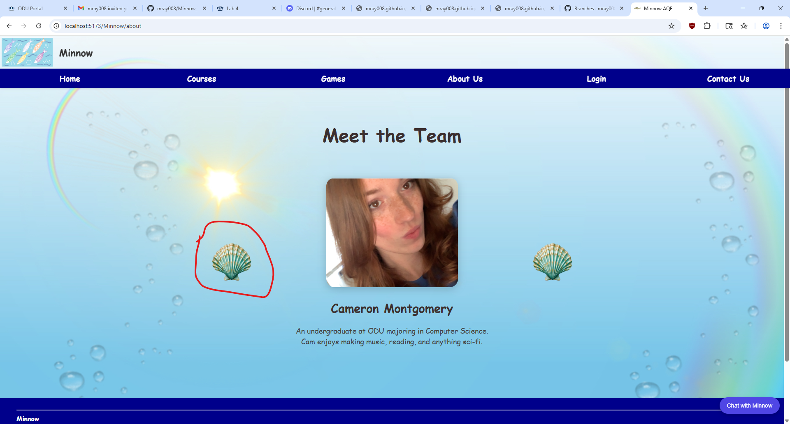
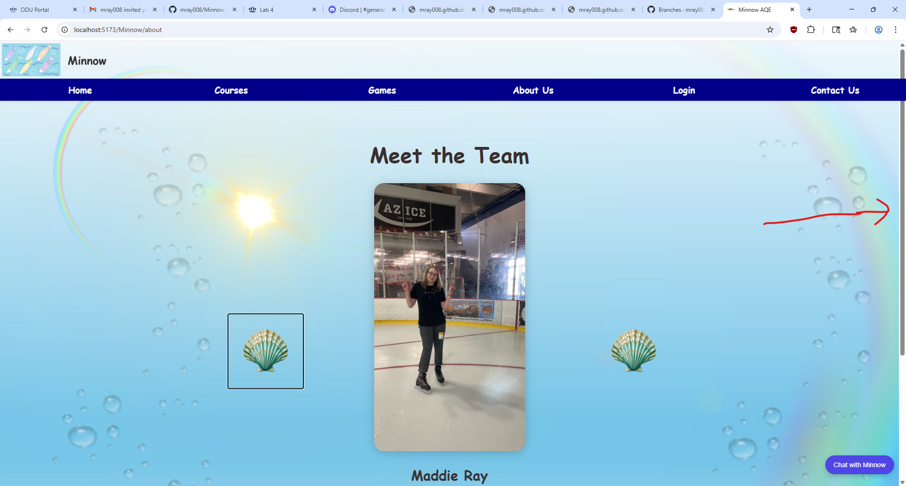

Authors: Lee Klaus

Figure 1: Back at the Landing page,
you can see the fourth option in the menu, “About Us”. This page contains information and
pictures of the team that put the Minnow project together! By clikking on the "About Us" button,
(Circled in red), you will be taken to the About Us page.

Figure 2: You have reached the About Us page! Here,
you can see the pictures and names of the teammembers who developed Minnow, one person at at time. Also,
there is a brief description of their character and/or hobbies, so that you can get to know them better!

Figure 3: You may recall that
this page has teammembers, not just one. To view the next teammeber, click on the big seashell
on the right side of the picture (it is circled in red). This will take you to the
next teammeber! (There are six in total).

Figure 4: You don't have to go to
right all the time. In fact, if you prefer, you don't have to at all! If you prefer going left or you
want to go back to a person you already viewed, just click on the big seashell to the left of the picture
(whoever it is). Also, there is no limit to going right or left.

Figure 5: You might encounter a picture
that is too big for your screen, or you can't see the message. No problem! Just scroll down or use
the vertical scroll bar. (See the red arrow) (Note: depending on your system, the bar may have a diferent
appearance, and you may have to move your mouse over it to make it appear.)